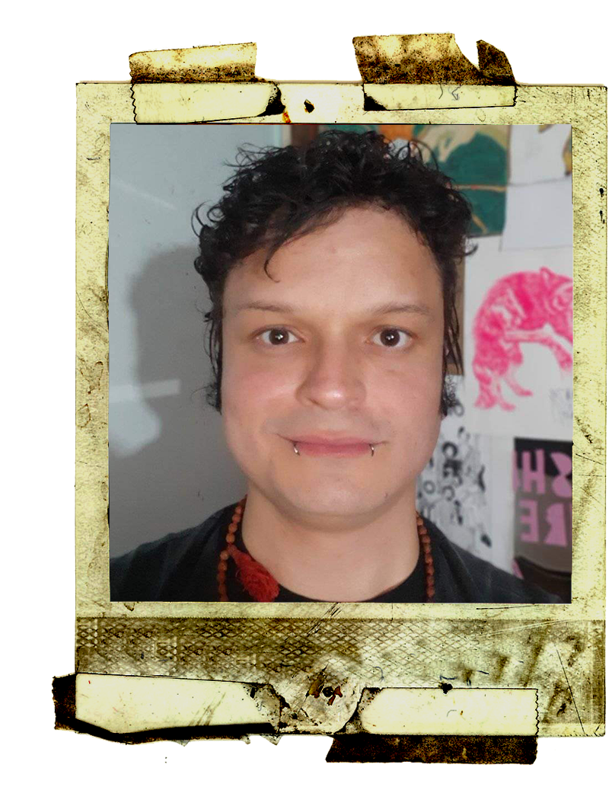

Ao mercado Publicitário
como
:
Web designer , criação e ativação de campanhas SEo ( Google AdWords ), criação do material visual para todas redes sociais, atualização de sites e briefing com clientes tanto pessoalmente quanto por telefone.
desde 2010, crio identidades visuais, sites, peças publicitárias, mídias sociais e impressos para clientes dos mais diversos segmentos laborais.
Web designer , criação e ativação de campanhas SEo ( Google AdWords ), criação do material visual para todas redes sociais, atualização de sites e briefing com clientes tanto pessoalmente quanto por telefone.
desde 2010, crio identidades visuais, sites, peças publicitárias, mídias sociais e impressos para clientes dos mais diversos segmentos laborais.
Multimídia
Design
Consultoria
em
Design
artista multimídia
Ilustrador
e Artista.
coescrevo, faço todo conceito visual (design/editoração/pintura) para série de livros em parábolas com meu sócio .
Utilizo múltiplas plataformas e técnicas, digitais e analógicas, abstratas e figurativas, autorais e sob demanda solicitada
coescrevo, faço todo conceito visual (design/editoração/pintura) para série de livros em parábolas com meu sócio .
Utilizo múltiplas plataformas e técnicas, digitais e analógicas, abstratas e figurativas, autorais e sob demanda solicitada
Visuais
Artes
colunista
Redator
convidado pelo
Teal feed: Escrevo
em três idiomas
(português/inglês/espanhol).
escrevo artigos sobre Design , UI/UX, Web, Direção de Arte e Artes Visuais.
ao portal internacional de artigos e notícias.
escrevo artigos sobre Design , UI/UX, Web, Direção de Arte e Artes Visuais.
ao portal internacional de artigos e notícias.
/euicaro
TealFeed
Quem
Sou
UX/UI Designer,
com
mais de 13 anos de experiência.
Transformo
ideias em interfaces intuitivas excepcionais.
Especialista Em: Pesquisa e Análise de Dados em Usuabilidade, Arquitetura da Informação, Prototipação e Wireframing.
Utilizo ferramentas como: figma , VS C ODE Hotjar , Wordpress , Framer , Google Analytics, SEO entre outras.
Especialista Em: Pesquisa e Análise de Dados em Usuabilidade, Arquitetura da Informação, Prototipação e Wireframing.
Utilizo ferramentas como: figma , VS C ODE Hotjar , Wordpress , Framer , Google Analytics, SEO entre outras.
Em UX Research, Coordeno e Faço: a concepção, aplicação, decupação, revisão e pesquisa / análise de usuário.
Faço toda jornada de usuário, arquitetura da informação e testes de usabilidade .
Construo interfaces responsivas , intuitivas e centradas no usuário.
Minha paixão é construir produtos digitais que facilitem a vida das pessoas.
Inglês
Currículo
Português
Currículo
c
lientes
euicaro.com
contato@
/in/euicaro
Linkedin
entre em contato
Telefone
/Icaro_Batista
Behance


ICARO BATISTA
ux/ui
designer
PcD: CID 10 Z96.6